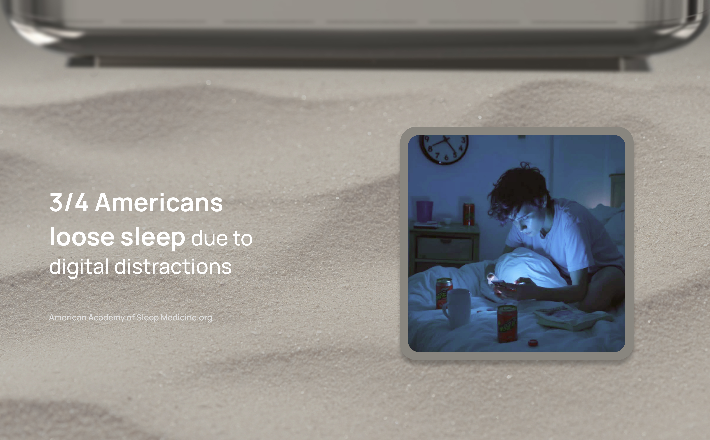
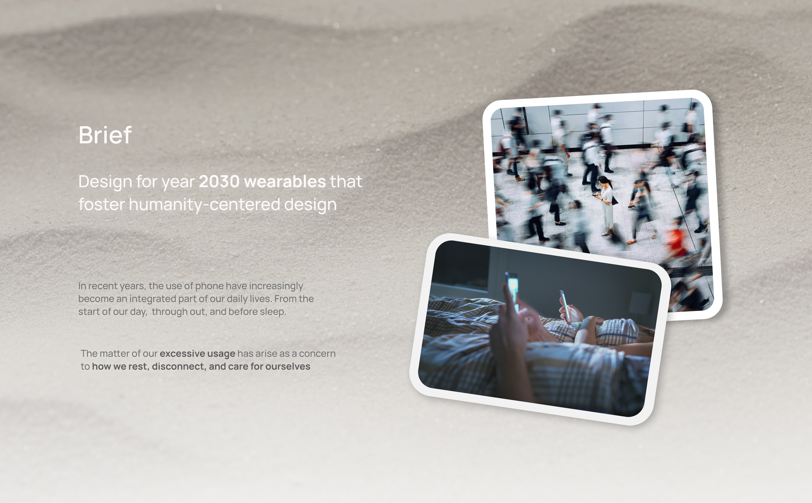
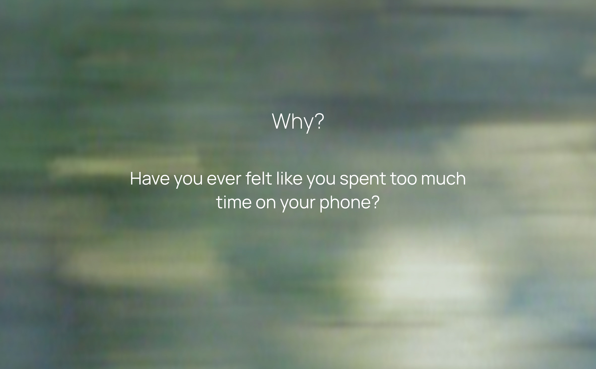
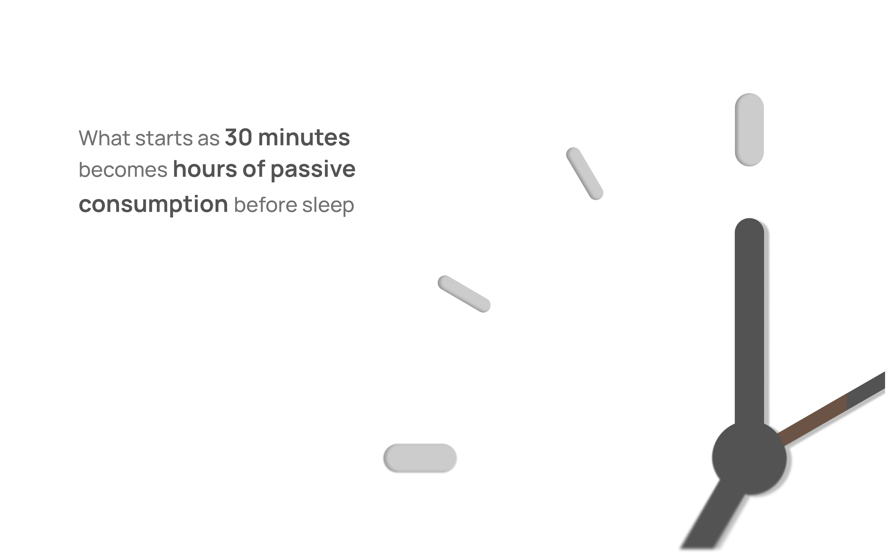
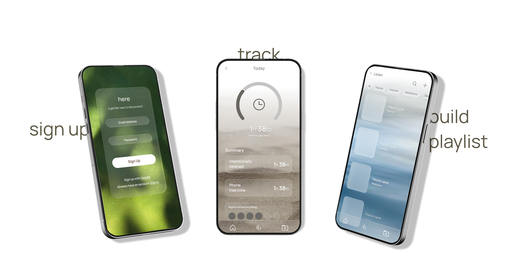
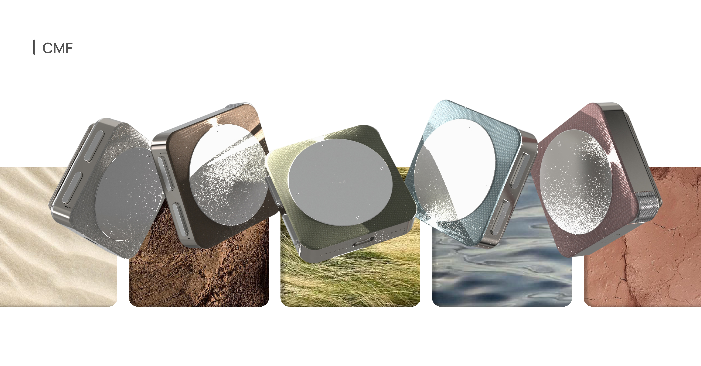
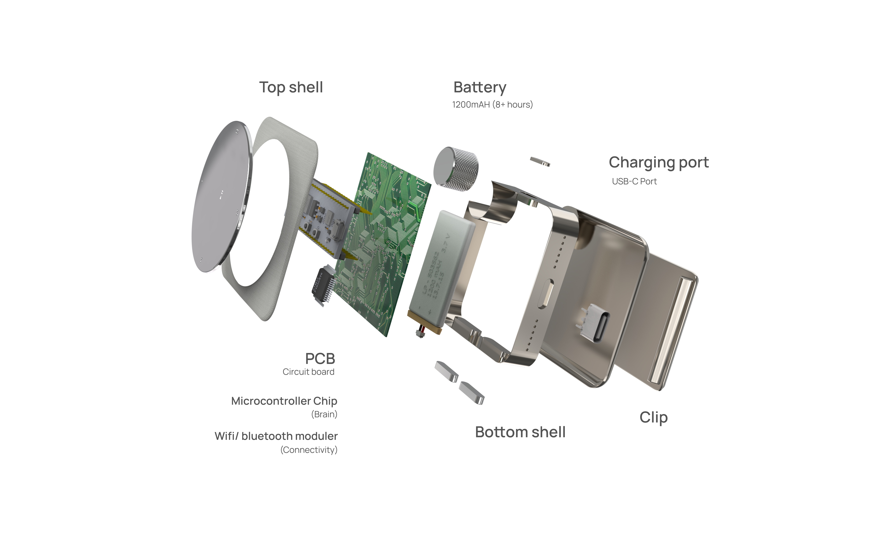

A screenless clip-on audio device for bedtime. Designed for Gen Z users who want to disconnect.
Overview
A screenless clip-on audio device for bedtime — no notifications, no light, just sound. Research-led from user interviews through hardware exploration, CAD, and final renders.



Research
People reach for their phone at night not because they want to — because there's no satisfying alternative.




Concept exploration
Started with the key experience of a screenless wearable — tactile buttons, fits comfortably in the palms of the hand.


Design decisions
I tested all of these prototypes with users, and reportedly 87% liked the rectangular shape — they were able to distinguish the different sides with functions.


Final design
1.7in × 1.7in × 0.64in with a back clip. No screen, no notifications — just sound and stillness.



